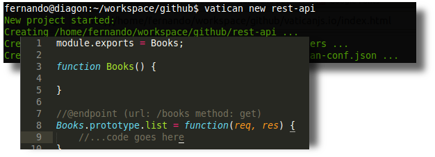
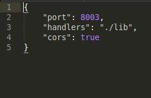
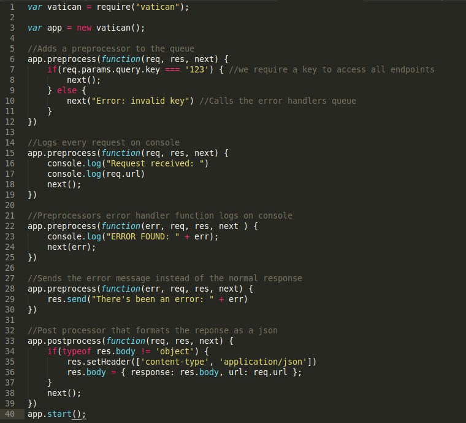

Toggle navigation
Vatican.js
Quick and powerful APIs at the tip of your fingers...
Vatican
.
js
v 1.2.0
"Creating an API was never this easy. Harness the power of
annotations
in Node.js to help you define your endpoints..."
Documentation
Download
Features
Micro-framework for creating REST APIs
Supports code annotations, to define the endpoints
Command Line tool
Minimal dependencies (no Connect, no Express, just the absolute minimal)
Support for Connect middleware
Pre-process requests and post-process response

Easy to use
1
Install
$>npm install -g vatican
2
Create project and configure it
$>npm new project-name
Edit the
vatican-conf.json
file 
3
Code it!

Wanna know more?